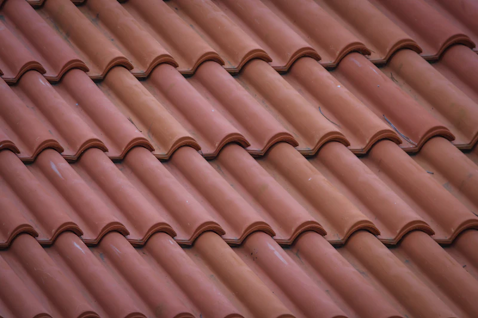
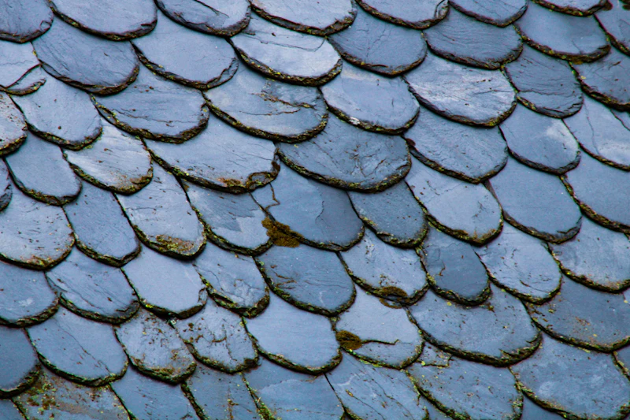
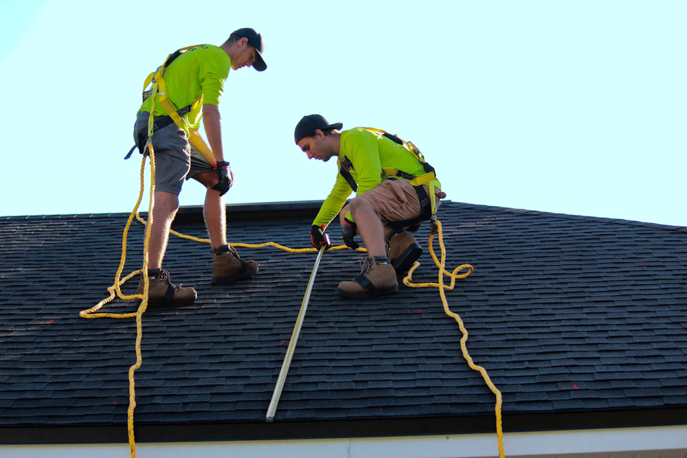

Steildach
Die Urform aller Dachkonstruktionen – heute vielseitiger denn je. Ob Holzschindel, Ziegel oder Naturstein: Wir finden für jeden Wunsch eine individuelle Lösung, von der Loggia bis zur Dachterrasse.
Dachdeckermeisterbetrieb · Hannover & Umgebung
Vom ersten Aufmaß bis zur letzten Schieferplatte: Wir decken, dichten und dämmen Ihr Dach – individuell, zuverlässig und fachgerecht. Für private und gewerbliche Kunden, am Neubau wie am Altbau.
Leistungen

Die Urform aller Dachkonstruktionen – heute vielseitiger denn je. Ob Holzschindel, Ziegel oder Naturstein: Wir finden für jeden Wunsch eine individuelle Lösung, von der Loggia bis zur Dachterrasse.

Dauerhaft dicht – auch beim Null-Grad-Dach. Mit dem richtigen Material und zuverlässigem Handwerk, auf Wunsch mit extensiver oder intensiver Dachbegrünung.

Vorgehängte, hinterlüftete Fassaden aus Schiefer, Holz, Faserzement oder Metall. Das Kondensat wird abtransportiert – Dämmung und Mauerwerk bleiben trocken.
Wärmedämmung, Dachfenster, Lüftung und Absturzsicherung: die Technik, die aus einem Dach ein energieeffizientes, sicheres Zuhause macht.

Kupfer, Titanzink, Aluminium: Seit Jahrhunderten formen Spengler aus Metall kleine Kunstwerke. Vom präzisen Rinnenanschluss bis zum eleganten Stehfalzdach.

Eine der schönsten Künste des Dachdeckerhandwerks – und unsere Spezialität. An Dach, Fassade und Einbauteilen sind dem Handwerkskünstler kaum Grenzen gesetzt.

Gebäudeenergieberatung
Als zertifizierter Gebäudeenergieberater (HWK) zeigen wir Ihnen, wie Sie die Vorgaben des Gebäudeenergiegesetzes (GEG) einhalten – und welche Fördermittel von KfW und BAFA Sie dabei mitnehmen können. Damit sich Ihr neues Dach doppelt rechnet.
Beratungstermin anfragenÜber uns
Sven Gutjahr ist als Sohn eines Dachdeckermeisters aufgewachsen und „krabbelte“ schon frühzeitig aufs Dach. Heute stellt er Ihnen seine fachliche Kompetenz als selbstständiger Dachdeckermeister und Gebäudeenergieberater zur Verfügung – mit Schwerpunkt auf Schieferdeckung und Bauklempnerei.
„GUTJAHR – Wenn’s GUT werden soll.“

Karriere
Sie arbeiten gern mit den Händen und haben Höhenluft im Blut? Wir suchen Verstärkung für unser Team – vom Gesellen bis zum erfahrenen Vorarbeiter.
Kontakt
Vereinbaren Sie noch heute ein persönliches, unverbindliches Beratungsgespräch mit uns – wir melden uns schnellstmöglich zurück.
AnschriftGutjahr Dachtechnik · Sven Gutjahr
Lange Weihe 26 · 30880 Laatzen
Telefon+49 (0) 511 982 30 89 0